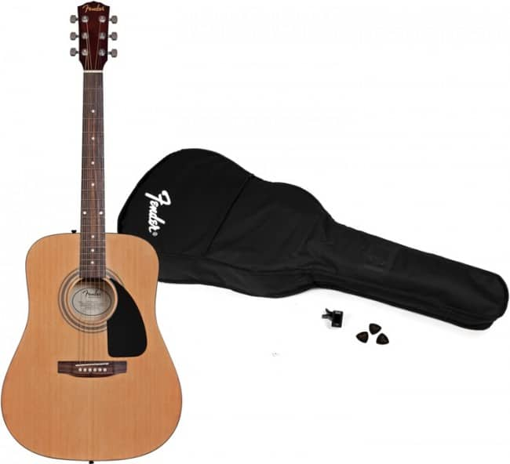
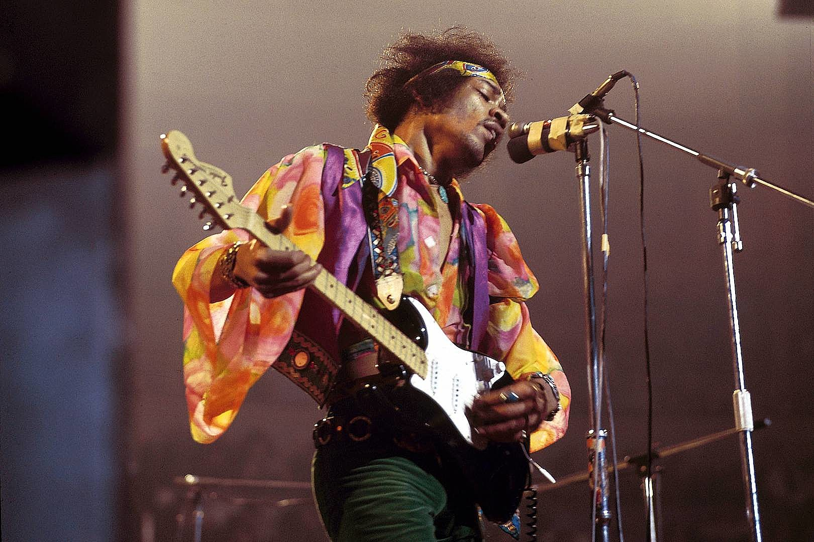

El propio Leo Fender estudio administración de empresas, pero trabajo como electricista de radio. Debido a la situacion económica de los años 30, perdio su trabajo. Por lo tanto, fundo un negocio, el “Fender Radio Service”. Además de vender equipos eléctricos, instrumentos musicales, partituras y discos, también ofrecía reparaciones.
Entre sus primeros clientes se encontraban musicos a los que equipó con pastillas para la amplificacion eléctrica. Con Cayton Orr Kauffmann, guitarrista de lapsteel, comenzó la producción de sus propias guitarras de lapsteel así como de amplificadores.
los instrumentos y amplificadores se vendieron con exito a los músicos locales. Sin embargo, Kauffman se retiró del negocio ya que éste se volvio demasiado intensivo en mano de obra para el.
Fender fundo su empresa y se traslado a unas instalaciones de producción mas grandes. Ya en ese momento estaba experimentando con la construccion de una guitarra electrica de cuerpo solido, que queria producir en masa.

MODELOS
La marca se dio a conocer a traves de la Fender Telecaster, fue la primera guitarra electrica de cuerpo solido en el mundo en ser producida en masa.
La Fender Stratocaster es tambien una de las guitarras eléctricas mas conocidas y copiadas.
En 1959 Fender se hizo cargo de la empresa Harold Rhodes. El famoso piano de Rodas está disponible desde 1965.

Guitarristas famosos con una guitarra acustica Fender
Además, los instrumentos Fender se asocian con numerosos artistas conocidos de los generos de la música popular. Numerosos musicos o guitarristas conocidos, entre otros , Eric Clapton , Jimi Hendrix , Avril Lavigne y el guitarrista alemán Axel Rudi Pell de juego en una guitarra Fender
